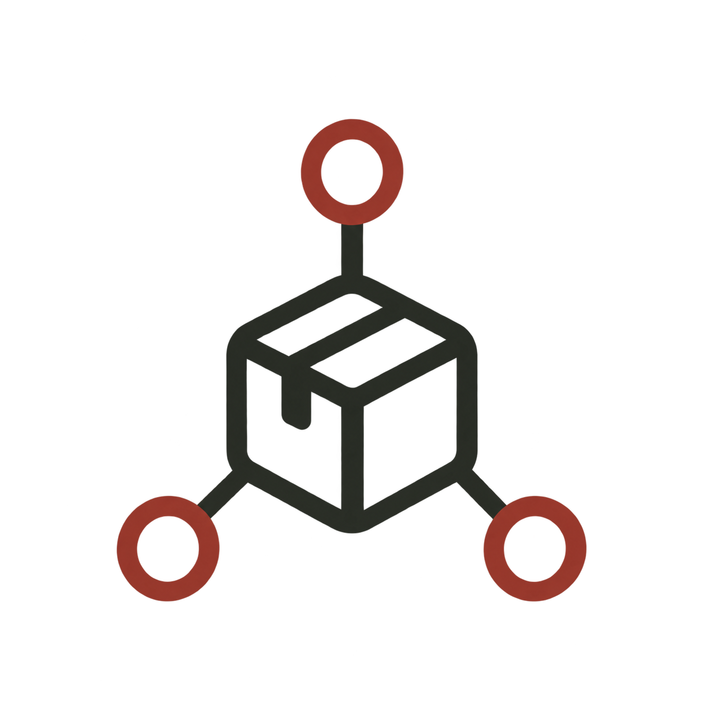

SERVICE 01
商品販売・催事出店
- 百貨店・商業施設
- 地域イベント
- 北海道産品の販売
全国の百貨店、商業施設、地域イベント、企業催事などで北海道産品を販売します。海鮮丼やカニ、ホタテ、イクラなどの商品を取り扱い、商品の魅力を伝える販売活動を行います。

04 / 05
Events & local products
Conceptこの事業について
全国の百貨店や商業施設、地域イベント、企業催事などで、海鮮丼やカニ・ホタテ・イクラといった北海道産品を販売しています。商品の調達から売場づくり、接客・販売、撤収まで、企業様・主催者様に代わって催事の運営をお引き受けします。
Serviceサービス内容
SERVICE 01
全国の百貨店、商業施設、地域イベント、企業催事などで北海道産品を販売します。海鮮丼やカニ、ホタテ、イクラなどの商品を取り扱い、商品の魅力を伝える販売活動を行います。
SERVICE 02
企業様やイベント主催者様に代わり、商品の準備、陳列、接客、販売、売上管理、撤収まで対応します。人員不足やイベント運営の負担を軽減し、スムーズな催事運営をサポートします。
SERVICE 03
催事で必要な商品を弊社で先に仕入れ、代金は後払いでご請求することができます。
掲載写真はイメージです。
Reason選ばれる理由

01北海道の海産物・農産物を中心に、魅力ある商品を調達できるネットワークを活用。地域の特色を活かした商品構成で、他のイベントとの差別化を目指します。
商品選定・仕入れ・会場設営・接客・販売・撤収までワンストップで対応。複数の業者に依頼する手間を削減し、効率的なイベント運営を実現します。
北海道を拠点に、全国の物産展・百貨店・商業施設・屋外イベントなどへの出店を目指します。開催地域やイベントの特性に合わせて柔軟な販売体制をご提案します。
Price料金
50,000円〜／回
イベントへの出店準備や販売サポートを依頼したい企業様向け。
150,000円〜／回
百貨店や商業施設などで本格的な物産展・催事販売を行いたい企業様向け。
※出店規模・開催日数・人員数により変わります。
個別お見積もり
イベントの企画段階から運営まで、すべてをまとめて依頼したい企業様向け。
※イベントの規模・内容に合わせてお見積もりします。
※料金は目安です。開催場所・期間・規模によって変わります。詳しくはお見積もりでご案内します。
Flowご利用の流れ
出店を検討されているイベントの内容、開催場所、開催期間、販売商品、予算などをヒアリングします。
イベントの規模やターゲットに合わせて、販売商品・出店方法・必要人員・運営内容を企画し、お見積もりをご提示します。
商品の仕入れ・調達、備品や資材の準備、売場づくり、商品陳列など、開催に向けた準備を行います。
当日の接客・販売・売上管理・在庫管理から終了後の撤収まで対応します。開催結果を振り返り、次回の改善につなげます。
出店を検討されているイベントがあれば、開催前のご相談からお気軽にどうぞ。
催事について相談するCONTACT
商品のご注文・お取り引き・配送のご相談はこちら。